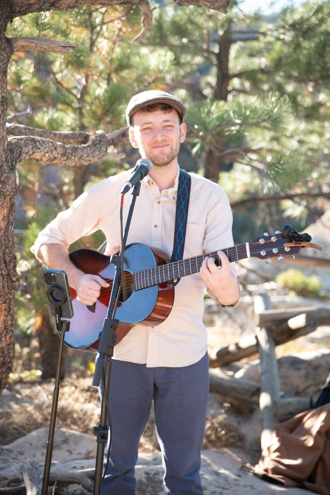
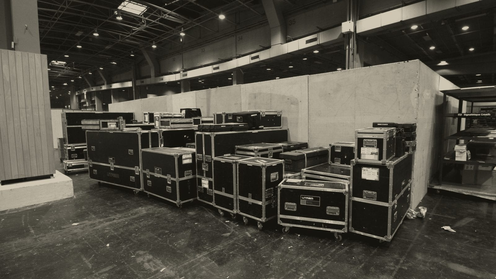

In the Colorado mountains
Live music for your Aspen corporate retreat
The meetings are on the calendar and the hotel is booked, and now someone has to figure out what everyone’s doing in the evenings. In Aspen, that can mean a welcome night, a dinner where everyone can talk, and one evening with dancing, and we’d love to help you find the right live entertainment for each of them.
Aspen is about four hours from Denver when the roads cooperate. It can take longer in winter, when Independence Pass closes and the drive goes the long way through Glenwood Springs, so an Aspen event is usually a two-day trip for a band. Still deciding what to plan? Take a look at these eight corporate retreat evening ideas, or learn more about how we work on our corporate retreats page.
The look
Live music outdoors in Aspen
Here’s an acoustic act playing outdoors, and a look at the gear that comes along for the drive.


Budget
What to budget for live music in Aspen
Compared with an event in Denver, an Aspen event adds travel and lodging for the band.
- The music
- We’ll usually recommend a duo for cocktails and dinner, or a quartet if you want people dancing.
- Travel
- The drive can take up most of a working day for the band on each side of your event, so travel will be a bigger part of your budget than it would be in Denver.
- Lodging
- After a late set, we can’t ask a band to drive four hours of mountain highway home, so they’ll need somewhere to stay that night.
- For your finance team
- Retreat budgets often go through finance, so just let us know what they need from us.
Curious how the mountain towns compare with the rest of Colorado? Take a look at our Colorado cost guide.
Hotels & event spaces
Aspen venues.
The Little Nell at the base of Aspen Mountain and the Hotel Jerome in the center of town are both lovely choices for a corporate dinner. The St. Regis Aspen is a great fit if you need a ballroom, and Aspen Meadows is a campus where you can hold sessions during the day and have dinner on the property at night. The Limelight is a more casual option for welcome nights and closing parties.
If you’d like one act for the whole evening, Tejas Singh can start as a duo and finish as a quartet. If all you need is dinner music, a jazz duo of upright bass and guitar is a lovely choice, and everyone at the table can still hear each other.
Live music for an Aspen corporate dinner
Many Aspen dining spaces are on the small side, so you may not need more than a trio.
Learn more about planning live music in the Colorado mountains.
At 7,908 feet the altitude is gentler than Vail’s and well under Breckenridge’s, and we still plan a longer sound check for it.
Private celebrations in Aspen.
We also play milestone birthdays, anniversaries and family gatherings in Aspen, and the travel and lodging work the same way. Learn more about live music for private parties.
If the drive is a concern, the towns along I-70 are a shorter trip and often don’t need lodging for the band, so take a look at Vail.
Questions
Booking live music in Aspen
Need stage sizes and power for your venue? Take a look at our technical page.
Can a band play outdoors in Aspen?
What do Aspen venues need from the band?
How much space and power does the band need?
Planning a retreat in Aspen? Send us your dates and we’ll come back with a recommendation and a price.
We’re based in Denver, and we can bring anything from a solo musician to a full band to your Aspen retreat, with a sound system sized to the venue and a single point of contact.